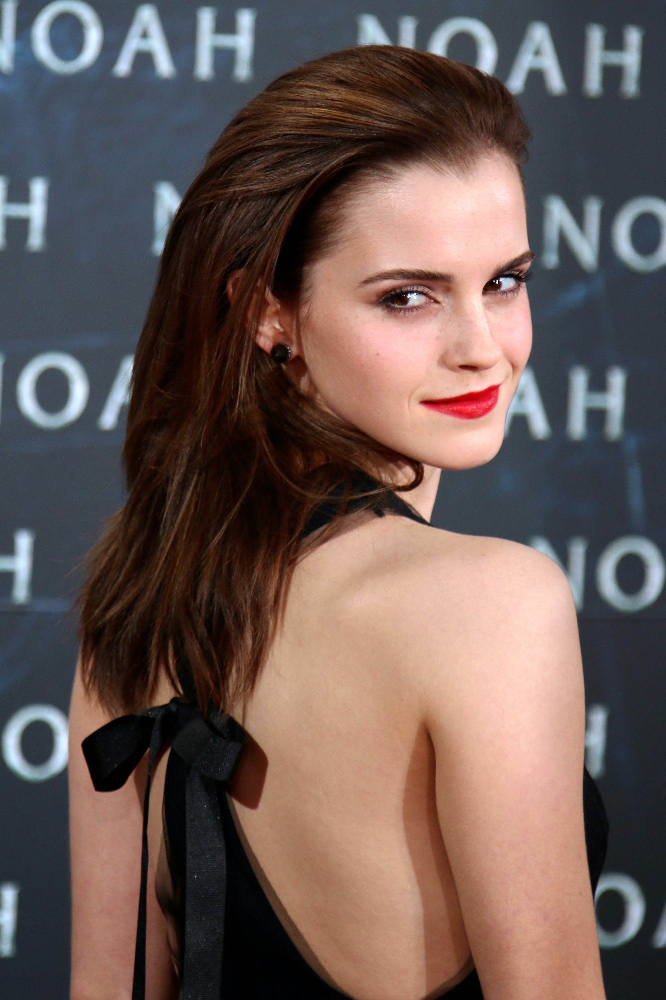
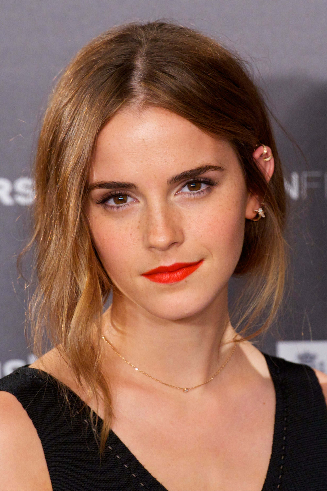
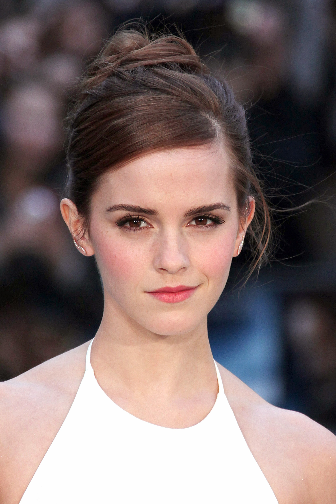

Emma Watson



Emma Charlotte Duerre Watson
é uma atriz, modelo e ativista britânica, nascida na França
conhecida mundialmente por ter atuado na série
de filmes Harry Potter, que serviram como adaptação
para o cinema da série de livros homônima da
escritora J. K. Rowling.
*Citação*
“É uma jornada e a coisa triste é que você só aprende com a experiência,
então não importa o quanto alguém te diga as coisas, você tem de ir lá
e cometer seus próprios erros para aprender.”
-Emma Watson
- Nome completo:Emma Charlotte Duerre Watson
- Nascimento:15 de abril de 1990 (30 anos) Paris, França
- Ocupação:Atriz, modelo e ativista
- Pais:Chris Watson e Jacqueline Luesby
- Primeiro trabalho: Harry Potter and the Philosopher's Stone
(Harry Potter e a Pedra Filosofal)